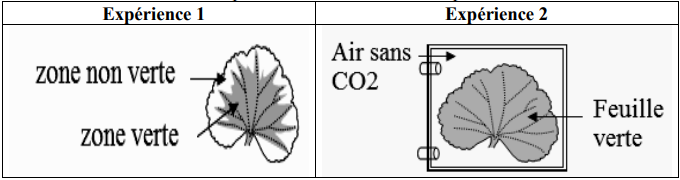

Devoir de Contrôle N°2 de Sciences de la Vie et de la Terre
Lycée Mahmoud El Messadi Nabeul
Classe : 1ère AS - Professeur : Mzid Mourad
Année : 2013/2014
Instructions générales
- Pour chaque item du QCM, il peut y avoir une ou deux réponses correctes.
- Toute réponse fausse annule la note attribuée à l'item.
- Répondez précisément aux questions posées.
I/ QCM (4 points)
Pour chacun des items suivants, il peut avoir une ou deux réponses correctes. Choisir la (ou les) bonne(s) réponse(s). Toute réponse fausse annule la note attribuée.
1- La liqueur de Fehling :
2- La potasse est utilisée pour fixer de l'air :
3- Pour caractériser les protides on utilise les réactifs suivants :
4- La coloration bleue obtenue avec l'eau iodée montre la présence de :
II/ Définir les mots suivants (4 points)
• La photosynthèse :
• Les échanges gazeux respiratoires :
• Les échanges gazeux photosynthétiques :
• L'amidon :
III/ (12 points)
Pour montrer la présence de l'amidon dans une feuille verte on doit faire les étapes suivantes :
Etape 1 : on plonge une feuille verte dans l'eau bouillante.
Etape 2 : on plonge cette feuille dans l'alcool bouillant.
Etape 3 : on verse sur cette feuille quelques gouttes d'eau iodée.
1) Donnez le but de chacune des étapes 1, 2 et 3 :
- Etape 1 :
- Etape 2 :
- Etape 3 :
2) Quel résultat doit-on obtenir suite à l'étape 3 en justifiant la réponse :
- si la feuille est prélevée le matin avant exposition de la plante à la lumière ?
- si la feuille a été prélevée en fin d'après-midi ?
3) Afin de déterminer les conditions de fabrication de l'amidon chez la plante verte on réalise une série d'expériences avec des feuilles exposées à la lumière :
Expérience 1 : zone non verte / feuille verte / zone verte
Expérience 2 : air sans CO₂

1- Donner pour chaque feuille le résultat qu'on doit obtenir sous l'action de l'eau iodée.
- Expérience 1 :
- Expérience 2 :
2- Quelles conclusions peut-on tirer des expériences 1 et 2 ?
3- Au cours de la fabrication de l'amidon la plante dégage un gaz.
- Lequel ?
- Comment le mettre en évidence ?
Correction du devoir
I/ QCM - Correction
Réponses :
1- b) est un réactif chimique et d) agit avec le glucose.
2- b) le dioxyde de carbone. (La potasse absorbe le CO₂)
3- b) sulfate de cuivre avec soude (réactif de Biuret pour les protéines).
4- c) l'amidon. (L'eau iodée colore l'amidon en bleu).
II/ Définitions - Correction
• La photosynthèse : c'est la synthèse de la matière organique par les plantes chlorophylliennes en présence de la lumière, la chlorophylle et le dioxyde de carbone.
• Les échanges gazeux respiratoires : c'est le fait d'absorber le dioxygène et de dégager le dioxyde de carbone pour fournir l'énergie nécessaire.
• Les échanges gazeux photosynthétiques : c'est le fait d'absorber le dioxyde de carbone et de dégager le dioxygène en présence de la lumière.
• L'amidon : substance organique formée par les végétaux en présence de la lumière, le CO₂ atmosphérique, la chlorophylle et l'eau et les sels minéraux du sol.
III/ Expériences - Correction
1) But de chaque étape :
- Etape 1 : tuer les cellules (arrêter les réactions métaboliques).
- Etape 2 : décolorer les feuilles (extraire la chlorophylle).
- Etape 3 : chercher la présence d'amidon (coloration bleue).
2) Résultat attendu :
- Feuille prélevée le matin avant exposition à la lumière : coloration jaunâtre car absence de synthèse d'amidon (pas de photosynthèse dans l'obscurité).
- Feuille prélevée en fin d'après-midi : coloration bleue foncée due à la présence d'amidon synthétisé pendant la journée à la lumière.
3) Expériences :
1- Résultats sous l'eau iodée :
- Expérience 1 (feuille panachée) : zone non verte → jaune ; zone verte → bleue foncée.
- Expérience 2 (air sans CO₂) : la feuille reste jaune (pas d'amidon).
2- Conclusions :
- Expérience 1 : la chlorophylle est indispensable à la photosynthèse (seules les parties vertes produisent de l'amidon).
- Expérience 2 : le dioxyde de carbone (CO₂) est nécessaire à la fabrication de l'amidon.
3- Gaz dégagé : le dioxygène (O₂). Mise en évidence : il ravive une allumette incandescente.